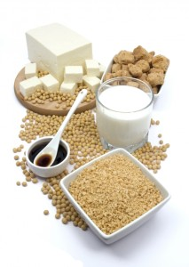

IMPORTÂNCIA DOS FITOESTRÓGENOS, PRESENTES NA SOJA, PARA A SAÚDE
As isoflavonas (também chamadas de isoflavonóides) pertencem à família dos polifenóis. Uma propriedade comum dos polifenóis é a sua atividade antioxidante. Contudo as isoflavonas apresentam estrutura química semelhante aos estrógenos humanos, tal como o 17 b-estradiol, e por apresentar atividade estrogênica, essas substâncias são comumente referenciadas como fitoestrógenos. Esses compostos se encontram de forma natural em leguminosas e são especialmente abundantes nos grãos de soja.
{kind=link}
As isoflavonas da soja podem agir de três diferentes formas: como estrógenos e antiestrógenos, como inibidores de enzimas ligadas ao desenvolvimento do câncer e como antioxidantes.
Embora estudos mostrem que os efeitos estrogênicos das isoflavonas sejam muito pequeno (1/1.000 a 1/100.000 menos a atividade do estradiol), elas podem ao mesmo tempo exercer um efeito agonístico sobre os estrogênios. Na presença dos estrogênios elas funcionam como antiestrógenos, competindo com ele pelos sítios de ligação nos receptores de estrógenos presentes na célula, evitando que este hormônio exerça seus efeitos negativos, como aumentar o risco de câncer de mama nas mulheres. Na ausência de estrogênio (menopausa), essas substâncias apresentam efeito estrogênico e substituem o hormônio que apresenta em baixo nível, aliviando os sintomas indesejáveis da menopausa e reduzindo o risco de doenças cardiovasculares e osteoporose advindos da ausência do estrogênio humano.
A genisteína, tem atraído muita atenção, não somente por causa do seu potencial efeito anti-estrogênico, mas também por que inibe várias enzimas envolvidas em processos de carcinogênese. A concentração da genisteína na maioria dos produtos de soja varia de 1-2 mg/g. As populações orientais, que apresentam baixa incidência de câncer de mama e próstata, consomem de 28 g de genisteína por dia, enquanto que nos EUA é somente de 1-3 mg/dia. Estudos sugerem que somente a genisteína, dentre as isoflavonas, possui efeito potencial na inibição do crescimento de células cancerosas em concentrações fisiológicas e que a daidzeína só exerce algum efeito se combinada com a genisteína.
Os níveis das proporções de isoflavonas em alimentos a base de soja variam dependendo da variedade que se utiliza, das condições de cultivo, assim como da forma pela qual são processadas. Sendo assim, a maior parte da proteína de soja que é utilizada pela indústria de alimentos contém isoflavonas em concentrações variadas.
Alguns dos produtos processados à base de soja são: leite, tofu, miso, tempeh, molho, dentre outros.
O conhecimento das quantidades dessas substâncias nos derivados de soja é importante para fins de elaboração de recomendações nutricionais. Para isso deve-se realizar análises químicas e a técnica mais utilizada para a separação e quantificação das isoflavonas é a cromatografia líquida de alta eficiência (CLAE).
Assim, de acordo com o panorama apresentado, estudos relacionados com as isoflavonas são de extrema importância pelo potencial que têm de contribuir para o controle, não medicamentoso, de uma série de doenças.
por:
Sonia C. N. Queiroz / Raquel Tassara Nogueira / Shirlei Scramin
BIBLIOGRAFIA CONSULTADA
DESPAIGNE, D. A. N. Fitoestógenos y su utilidad para el tratamiento del síndrome climatérico. Rev. Cubana Endocrinol., v. 12, p. 128-131, 2001.
ESTEVES, E. A.; MONTEIRO, J. B. R. Efeitos benéficos das isoflavonas de soja em doenças crônicas. Rev. Nutr., v. 14, p. 43-52, 2001.
GENOVESE, M. I.; LAJOLO, F. M. Determinação de isoflavonas em derivados de soja. Ciênc. Tecnol. Aliment., v. 21, p. 86-93, 2001.